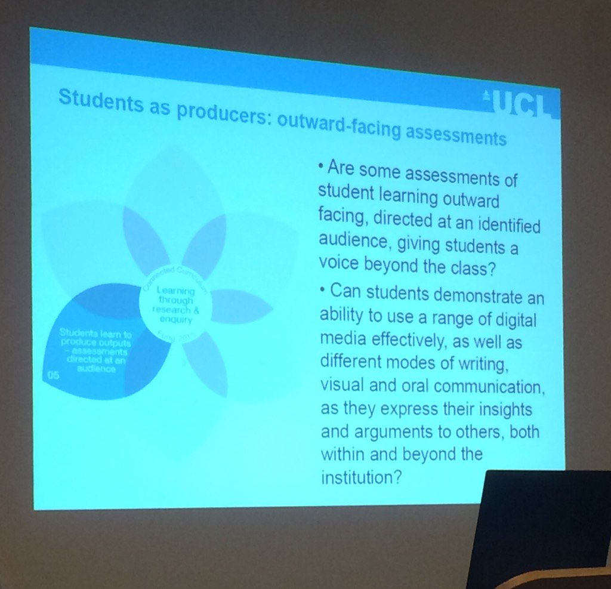

Edit
Students as Co-Creators: Integrating Research and Learning
Seminar, Panel Discussion and Workshop lead by Dilly Fung from UCL
- Students as Co-Creators : Integrating Research and LearningStudents as Co-Creators: Integrating Research and Learning though a Connected Curriculum Seminar, Panel Discussion and Workshop Join us for a One Day Event exploring Scholarship, Recognition and Co-Creation and how this can be developed at Swansea.
- Getting ready for today's event here's the hashtag #cocreateswan @susaltteam @DevonDilly @lappinscott @SwanseaUni pic.twitter.com/CqI5XBz68l
- Looking forward to speaking at #cocreateswan conference today about @UCLConnectedC and meeting great colleagues @SwanseaUni
- Looking forward to Students as Co-creators event at Swansea University #CoCreateSwan
- Excited about today's event on Co-Creation to work with our students as partners #CoCreateSwan @drmichlee @EducationSUSU #winning https://twitter.com/debbaff/status/818749403725004801
- Looking forward to listening to Dilly Fung and participating in the co-creation workshops #CoCreateSwan
- #CoCreateSwan about to get underway! pic.twitter.com/xWxkHWwuj6
- All ready for Students as co-creators #CoCreateSwan @SwanseaUni
- Professor Jane Thomas starts us off ! #cocreateswan @susaltteam @DevonDilly @lappinscott @SwanseaUni @UCLConnectedC pic.twitter.com/xYdYuj8fog
- #CoCreateSwan event will look at education and not just teaching. Guest speaker today is @DevonDilly
- Look8ng forward to the #CoCreateSwan event run by @susaltteam today
- Jane Thomas introduces Dilly Fung #CoCreateSwan, she welcomes a large group of colleagues for today's event
- Jane Thomas introduces Dilly Fung #CoCreateSwan, she welcomes a large group of colleagues for today's event
- Jane Thomas asks how can we take Co-creation forward here @SwanseaUni #CoCreateSwan. Lets see how the day unfolds!
- @lappinscott now addressing the crowd! Look out for #CoCreateSwan throughout the day! pic.twitter.com/JzWcqStGNo
- Thanks to @debbaff for organising today's event. Excited to be part of the collaboration. #CoCreateSwan https://twitter.com/debbaff/status/818755416385585153
- Highlighted by @lappinscott at #CoCreateSwan ... And why not! https://twitter.com/phil_baty/status/818031892540903428
 Mock TEF results revealed: a new hierarchy emergesOur data teams modelling of the potential teaching excellence framework results shows the Russell Group losing out to a new elite
Mock TEF results revealed: a new hierarchy emergesOur data teams modelling of the potential teaching excellence framework results shows the Russell Group losing out to a new elite- Students as co-producers of knowledge - subject of talk by @DevonDilly #CoCreateSwan
- #cocreateswan @DevonDilly exploring students as co producers of knowledge pic.twitter.com/4VB13CDawc
- @DevonDilly Students as co-producers gives 4 points 1. Good education: a starting place #cocreateswan
- @DevonDilly Students as co-producers gives 4 points 2. the UCL Connected Curriculum #cocreateswan
- @DevonDilly Students as co-producers gives 4 points 3. Co-creating change #cocreateswan
- Aim is to inspire and provide a catalyst for conversation on co-creation @SwanseaUni #CoCreateSwan - should be interesting!
- ...and straight into the main session with @DevonDilly #CoCreateSwan @susaltteam pic.twitter.com/PmoUPwtCl6
- @DevonDilly Students as co-producers gives 4 points 4. your questions and comment #cocreateswan
- Looking forward to seeing how cocreation can work in mod langs and medieval studies #CoCreateSwan
- Link to our main resource padlet #cocreateswan https://padlet.com/Debbaff/Studentsascocreators looking forward to contributions from participants this afternoon :) https://twitter.com/debbaff/status/818757151741059073
- Students As Co-Creators : Integrating Research and Learning through a Connected Curriculum10 Jan 2017 Resource Padlet for Event
- .@DevonDilly speaking at the #CoCreateSwan event on good education and reaearch pic.twitter.com/47nHHZjNRu
- We should think of Education as a 'rounded eco system and a collective goal' @DevonDilly to foster a values based atmosphere #cocreateswan
- Drawing people together through testing dialogue @DevonDilly its all about the connections ... #cocreateswan
- Education as the widening of horizons - each of us having our own perspectives @DevonDilly #CoCreateSwan
- "Education is underpinned by the need for the human mind really remain unsatisfied with what it imagines it knows." #CoCreateSwan
- Important to keep an open mind about what we think we know & stand outside the space we're in! Philosophival beginnings for #CoCreateSwan!!
- Absolutely fascinating discussion, I'm enjoying the philosophical take on education from @DevonDilly #CoCreateSwan https://twitter.com/helenmd/status/818758674994855938
- Cross discipline connections open up rich opportunities @DevonDilly #cocreateswan
- Education is both individual and for the common good @DevonDilly #CoCreateSwan
- Education is for the global common good ... a shared responsibility @DevonDilly #cocreateswan
- Interesting to compare traditional with new model relationship between teaching & research #CoCreateSwan pic.twitter.com/4S0oGbOAlU
- So nice to see the relationship between teaching and research being promoted @DevonDilly @susaltteam #CoCreateSwan
- Exposing students to research enables them to understand where the edges of knowledge are - @DevonDilly #CoCreateSwan
- @DevonDilly UCL has a 20 year strategy to embed the concept of research-based education. Can we follow the theme @SwanseaUni ?#cocreateswan
- .@DevonDilly focusing on UCL Connected Curriculum and student learning through research and enquiry #CoCreateSwan pic.twitter.com/gp4OHMWl8G
- @DevonDilly Questioning whether assessment methods include how students have learned through research & enquiry #good point #CoCreateSwan
 Connected CurriculumConnected Curriculum aims to ensure that all UCL students are able to learn through participating in research and enquiry at all levels of their programme of study.
Connected CurriculumConnected Curriculum aims to ensure that all UCL students are able to learn through participating in research and enquiry at all levels of their programme of study.- It is important that students connect with research and researchers @DevonDilly #cocreateswan Template https://www.ucl.ac.uk/teaching-learning/case-studies/jan/2016/meet-researcher-programme
- Meet the researcher programmehttps://www.ucl.ac.uk/teaching-learning/case-studies/jan/2016/meet-researcher-programme
- UCL is outward looking, interdisciplinary connections @DevonDilly #CoCreateSwan Interesting concept
- "Students as producers: outward facing assessments" definitely food for thought here #CoCreateSwan
- Students as producers: outward-facing assessment, directed to a nominated audience @DevonDilly #CoCreateSwan.
- @DevonDilly Use outward facing assessment of student learning? Maybe direct at an identified audience #CoCreateSwan pic.twitter.com/P1SHsMXZYH
- 
- @DevonDilly telling #CoCreateSwan about outward facing assessment for students!
- public showcasing of work can be very motivating for students #cocreateswan #authenticassessment https://twitter.com/debbaff/status/818765131819745280
- Examples of outward facing assessments #CoCreateSwan pic.twitter.com/SK8HGtLCcu
- Outward facing assessments could include film documentaries - modern equivalent of an essay #CoCreateSwan
- Good ideas being shared @DevonDilly #CoCreateSwan https://twitter.com/Step4X/status/818765732741836800
- @cpjobling if I ask you really nicely will you do me a swirly whirly @mhawksey special for #cocreateswan please ????
- this mornings tweet happenings Courtesy of @cpjobling and the amazing @mhawksey http://hawksey.info/tagsexplorer/?key=1uoybda6FzI7GdWyjOWHbmc1j8Mbc3Ex5jmhI2GlsPsg&gid=400689247 #cocreateswan pic.twitter.com/SD5aioizwd
- @DevonDilly shares UCL resources and ideas https://www.ucl.ac.uk/teaching-learning/education-initiatives/connected-curriculum #CoCreateSwan
- A Connected Curriculum steering group can drive things forward #cocreateswan @DevonDilly
- Here are my OneNote notes on #CoCreateSwan https://doc.co/cV4yQS
- UCL Arena : a space for sharing of new ideas and practice sounds a great idea as does the funding for student led ideas #cocreateswan https://twitter.com/debbaff/status/818766515940065280
- UCL - London's Global UniversityUCL (University College London) is London's leading multidisciplinary university, with 8,000 staff and 25,000 students.
- A step towards parity of esteem between research and education (via @DevonDilly ) #cocreateswan https://www.heacademy.ac.uk/resource/rewarding-educators-and-education-leaders
 Rewarding educators and education leaders | Higher Education Academyhttps://www.heacademy.ac.uk/resource/rewarding-educators-and-education-leaders
Rewarding educators and education leaders | Higher Education Academyhttps://www.heacademy.ac.uk/resource/rewarding-educators-and-education-leaders- Dilly's presentation slides and links from today available from my padlet https://padlet.com/Debbaff/Studentsascocreators #cocreateswan @DevonDilly
- Some great ideas shared #cocreateswan @DevonDilly https://twitter.com/debbaff/status/818767817226981376
- And further information and details for @DevonDilly: #CoCreateSwan @susaltteam pic.twitter.com/SgOZpP8ckV
- Contacts and content from today's even #cocreateswan @DevonDilly https://twitter.com/HelenMD/status/818768765596864513
- PVC Stringer now introducing the panel discussion #CoCreateSwan
- #cocreateswan significant cultural change requires senior management leadership. UCL led Research =teaching events .
- Panel discussion now starting #CoCreateSwan - what does scholarship, recognition & co-creation mean for @SwanseaUni
- Discussion now looking at staff forums - a time for staff to decide what they discuss #CoCreateSwan
- How do we link research and education seamlessly for the benefit of our student's @SwanseaUni experience? #CoCreateSwan
- SOAS University Defends Students Accused Of Being Snowflakes Over White Philosopher Demands http://www.huffingtonpost.co.uk/entry/soas-university-snowflakes-white-philosopher_uk_5873767be4b0a1ff7042a8d4 ? #CoCreateSwan
- SOAS University Defends Students Accused Of Being 'Snowflakes' Over White Philosopher DemandsStudents want Kant and Descartes replaced with Asian and African figures.
- Moving from the modular structure to look at the whole programme for content and assessment. #OverAssessmentInHE?#CoCreateSwan
- Now discussing how far students want to be involved in co-creation #CoCreateSwan - active participation versus passive learning
- "Will TEF have more meaning than NSS?" Good question. 'Satisfaction' doesn't imply 'learning' http://onlinelibrary.wiley.com/doi/10.1111/j.1365-2929.2006.02503.x/abstract #CoCreateSwan
- Including undergraduates in research projects http://www.cur.org/publications/curq_on_the_web/ #CoCreateSwan
- Very creative notes @debbaff thanks for the visuals #CoCreateSwan https://twitter.com/debbaff/status/818788767075078144
- Very creative notes @debbaff thanks for the visuals #CoCreateSwan https://twitter.com/debbaff/status/818788767075078144
- Really enthused by #CoCreateSwan from @UCLConnectedC ... now wondering now how we will get to a @SUConnectedC
- Make small changes to develop a 'can do' ethos. Come together as a group to develop a @SwanseaUni plan #CoCreateSwan
- R=T (Research = Teaching)R=T (Research = Teaching) is a UCL Connected Curriculum initiative designed to inspire both students and academics to take an active role in research-based education.
- #cocreateswan same principles apply to PG programmes, but may have to vary for timeframe and presumably different emphasis?
- #cocreateswan Poses massive change for students & staff, regs, feedback systems, PDR metrics where feedback his modular output.... https://twitter.com/susaltteam/status/818785833574658048
- Here are my OneNote notes on #CoCreateSwan https://doc.co/cV4yQS
- Workshop activities now. How to "Be the Change" #CoCreateSwan
Workshop PADLets
- Students As Co-Creators : Integrating Research and Learning through a Connected Curriculum10 Jan 2017 Resource Padlet for Event
- BE THE CHANGEDiscuss amongst your group any ideas you may have for collaborating with others and engaging in creative thinking, to move things forward at Swansea. Contribute your ideas to this padlet here.
- IMAGINEImagine there were no barriers to the ideas your group has. ... contribute your ideas to this padlet
- great ideas and thought provoking questions at our co-creation event this afternoon with @DevonDilly #cocreateswan
- #CoCreateSwan people might like continue the conversation at #LTHEchat tomorrow at 8:00 pm http://lthechat.com/2017/01/07/lthechat-72-student-engagement-new-year-new-partnership-raisenetwork/
- #LTHEchat 72 Student Engagement New year, new partnership: @RAISEnetworkIn the first of our partnering chats were joined by RAISE members around the globe for a chat led by two of the RAISE coordinating team: Tom Lowe and Amarpreet Kaur (Abs) who will be tweeting fr
- Students as Co-Creators - a #Storify of #CoCreateSwan: https://storify.com/cpjobling/student-co-creation-at-swanseauni-cocreateswan
- Thanks! Great summary of such good day covering #cocreateswan Thanks to @DevonDilly for excellent leadership Ping @drmichlee @EducationSUSU https://twitter.com/cpjobling/status/818864196129591297